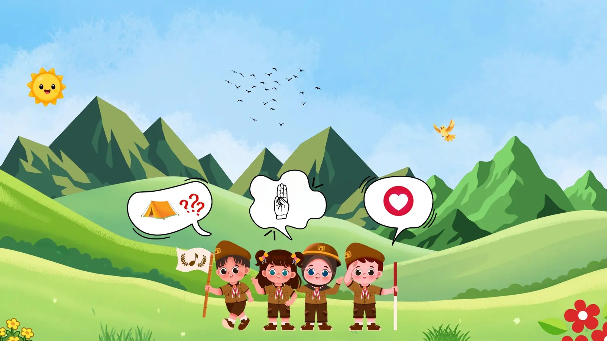
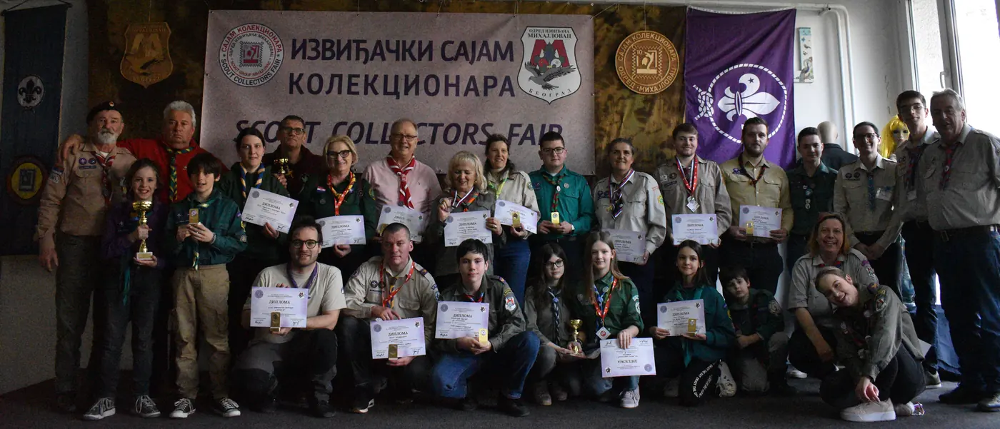
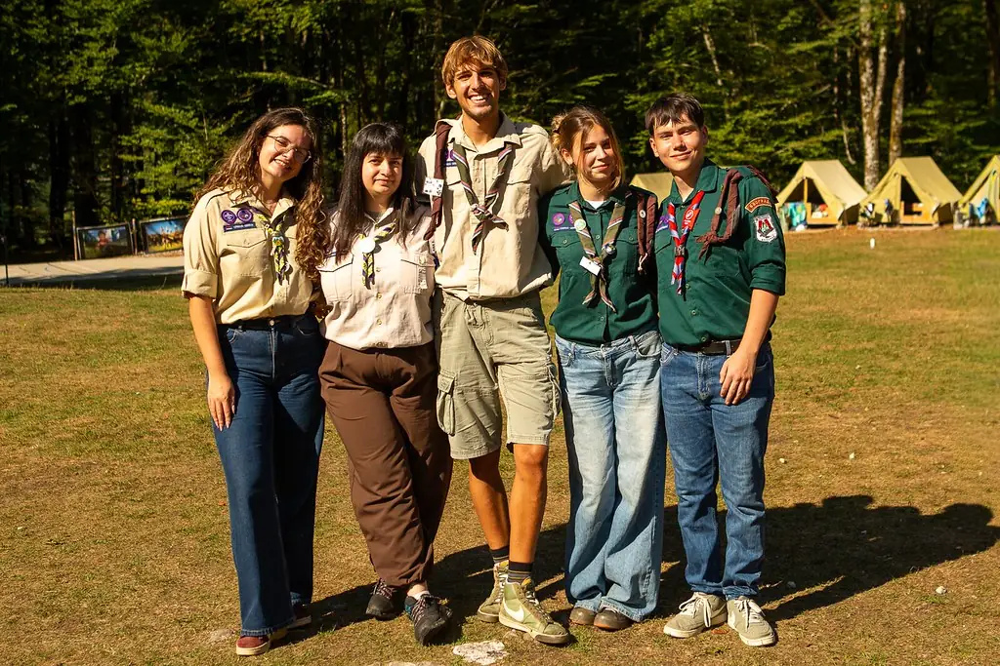

Odredske aktivnosti · Izviđači Beograd Više informacija o našim akcijama.
Sve što se u odredu dešava van nedeljnih sastanaka - aktivnosti, međunarodni kampovi i izleti. Za tačne datume i prijave pišite nam ili nas pozovite.

Sajam kolekcionara
Odred svake godine organizuje Sajam kolekcionara, koji se održava u martu/aprilu, a na kome izviđači predstavljaju rad odreda i razmenjuju kolekcionarski materijal.
Na sajmu izlažemo izviđačke značke, marke, razglednice i stare fotografije iz istorije odreda. Mlađi članovi dežuraju u parovima, uče kako se predstavlja odred i razgovaraju sa posetiocima; stariji vode razmenu sa kolekcionarima iz cele zemlje. Za mnoge je to prvi zadatak pred nepoznatim ljudima i najkraći put do samopouzdanja.
Volontiraj i ti, festival
Festival volontiranja, koji se održava u junu, na kome pokazujemo šta volonterski rad znači u praksi i pozivamo nove članove u odred.
Postavljamo radionice čvorova, orijentacije i prve pomoći, organizujemo igre za decu i razgovaramo sa roditeljima o programu odreda. Naši stariji članovi vode radionice sami: planiraju sadržaj, materijal i raspored dežurstava. Festival je i mesto gde svake godine upišemo nekoliko novih poletaraca.

Međunarodne aktivnosti
Naši članovi učestvuju na međunarodnim kampovima i susretima izviđača u inostranstvu.
Kroz Savez izviđača Srbije odred dobija mesta na međunarodnim kampovima i seminarima. Učesnici putuju u grupi sa vodičem, rade i žive sa izviđačima iz drugih zemalja i program vode na engleskom. Broj mesta je ograničen, pa se prijave otvaraju rano, najčešće za starije izviđače, planinke i brđane.
Pitajte za bilo koju akciju.
Za termine, cene i prijave javite se štabu odreda, odgovaramo istog dana.